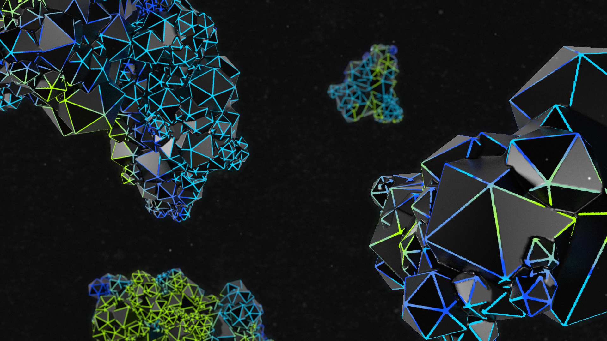

ARTKA PLATAFORMA
ARTKA Plataforma de Música Electrónica y Creatividad Digital, comenzó en 2016 como un proceso de selección de músicos electrónicos y artistas visuales, con el fin de incluirlos en su programación de formato LIVE ACT anual en Bogotá. Buscando afianzar conocimientos en música electrónica de producción en vivo, artes visuales y tecnología aplicable al arte, que integre conocimientos empíricos, aprendizaje de academia y exploración hacia la tradición de la fiesta, es así, que con la apertura de talleres, conferencias y conversatorios en torno a los antecedentes y futuro de estas prácticas artísticas en Bogotá y la región, ofreceremos espacios conjuntos de creación, lanzamiento y promoción de artistas nacionales o extranjeros residentes en Colombia.
www.artka.com.co
https://www.instagram.com/artkaplataforma/
Cargo
-En Artka soy el encargado de la dirección de arte para la marca desde 2018, creando la imagen general para los distintos eventos que se realizan cada año, la presencia online en campañas y diseño web.
ARTKA PLATAFORMA 2021

ARTKA PLATAFORMA 2020